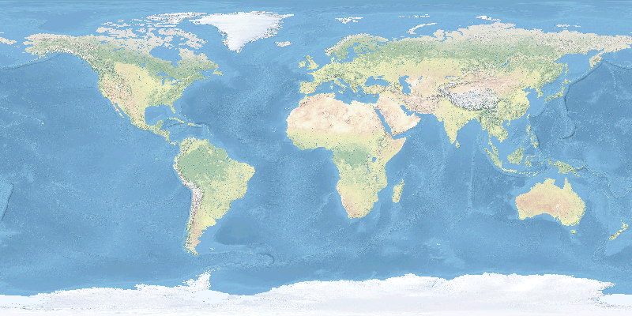
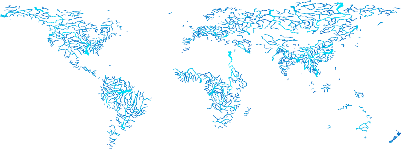

# Import libraries
import os
import sys
import subprocess
from pathlib import Path
import requests
from zipfile import ZipFile
# Find GRASS Python packages
sys.path.append(
subprocess.check_output(
["grass", "--config", "python_path"],
text=True
).strip()
)
# Import GRASS packages
import grass.jupyter as gj
from grass.tools import Tools
# Download dataset
url = "https://zenodo.org/records/13370131/files/natural_earth_dataset.zip?download=1"
filepath = Path.cwd() / "natural_earth_dataset.zip"
request = requests.get(url, allow_redirects=True)
if request.status_code != 200:
raise ConnectionError(f"Error downloading file: {request.status_code}")
filepath.write_bytes(request.content)
# Unarchive dataset
with ZipFile(filepath, 'r') as archive:
archive.extractall()
# Delete archive
os.remove(filepath)
# Start GRASS in project
home = Path.cwd()
project = "natural_earth_dataset"
session = gj.init(home, project)
tools = Tools()
# Print projection information
tools.g_proj(format="shell", flags="p")Getting started with GRASS for Conda
tutorial
grass
python
Get started with GRASS for Conda.
This is a very short introduction to installing GRASS distributed via Conda. With the Conda distribution of GRASS, you can install GRASS and the rest of the Python stack for data science with a single command. This means that you can easily integrate GRASS into data science workflows using the Python scientific ecosystem. This brief tutorial covers:
- Installing the Conda package and environment manager
- Creating a GRASS environment with Conda
- Running GRASS in a Jupyter notebook
Manager
Conda is an open source package and environment manager. Many open source projects use Conda to publish their software. With Conda, you can easily install collections of these packages in isolated environments to avoid conflicting software dependencies. With Conda, packages are distributed via channels, remote repositories that host packages. GRASS is distributed via conda-forge, a community smithy and repository [1]. There are several different distributions of Conda. For this tutorial, install Miniforge, a minimal distribution of Conda that uses conda-forge as its default channel [2]. We recommend Miniforge because it is the easiest, cleanest way to install the GRASS Conda Package. Other distributions may be incompatible with conda-forge, requiring proper configuration to work.
NoteUnix
On Unix-like platforms - including Linux, MacOS, and Windows Subsystem for Linux -
download the installation shell script and then run it in a terminal:
bash Miniforge3-$(uname)-$(uname -m).sh
NoteWindows
For Windows, download and run the binary installer. See here for more detailed instructions.
Environment
Now that Conda is installed, let’s use it to create an environment for GRASS. We will install the GRASS, Jupyter Lab, and requests Python packages with all of their dependencies into this environment. In a terminal, run conda create to create an environment named grass. Then use conda install to install the GRASS package. Next, run conda activate to start the environment.
conda create --name grass
conda activate grass
conda install grass jupyterlab requests folium ipyleafletYou can do this with just one line of code:
conda create -n grass grass jupyterlab requests folium ipyleaflet && conda activate grassIf you use a Conda distribution other than Miniforge, you will need to specify the conda-forge channel when creating the environment with -c conda-forge. You may also need to override your default channel settings with --override-channels to prevent conflicts.
Notebook
Let’s try the newly installed GRASS Conda package in a Jupyter notebook. We will use scripting to display maps from a sample dataset. We will download the dataset, start a GRASS session, and then display raster and vector maps from the dataset. Let’s begin by launching Jupyter Lab from the terminal. This will open a new Jupyter notebook in a web browser window.
jupyter labStart GRASS
To start a GRASS session, we need to define a project and its coordinate reference system. For this demonstration, we will use the Natural Earth Dataset for GRASS [3]. This dataset is a GRASS project with a collection of global raster and vector data in the World Geodetic System 1984. In your Jupyter notebook, use Python to download and unarchive the dataset. Then start a GRASS session using the dataset as a project. Read more about projects in GRASS here. Since the dataset is approximately 120MB, it may take a couple of minutes to download. As a test that GRASS started correctly, run g.proj with flag g to print the current projection.
Display Raster Map
The Natural Earth raster is a global basemap with land cover and shaded relief rendered with a natural color scheme. Display the Natural Earth raster map with d.rast.
# Display natural earth raster
m = gj.Map(width=800)
m.d_rast(map="natural_earth")
m.show()
Display Vector Map
Now display a vector map of global rivers. First apply a thematic color gradient to the rivers based on their stream order with v.colors. Then display the map with d.vect, scaling the line width by stream order.
# Display rivers
m = gj.Map(width=800)
tools.v_colors(map="rivers", use="attr", column="scalerank", color="water")
m.d_vect(map="rivers", width_column="strokeweig", width_scale=2)
m.show()
Reproducibility
Conda environments can also be created from an environment definition file that specifies the environment name, channel, and packages. This is an easy way to share and reproduce your environment. While you can specify versions for given packages, this example just installs the latest compatible versions for simplicity’s sake. To do this, first use a text editor to create a YAML file named environment.yml with the following contents:
# environment.yml
name: grass
channels:
- conda-forge
dependencies:
- grass
- jupyterlab
- requestsThen run conda env create using --file to specify your path to the environment definition file:
conda env create --file environment.ymlReferences
[1]
conda-forge community. 2015. The conda-forge Project: Community-based software distribution built on the conda package format and ecosystem. https://doi.org/10.5281/zenodo.4774217
[2]
conda-forge community. 2026. Miniforge. Retrieved from https://conda-forge.org/download/
[3]
Brendan Harmon and Paulo van Breugel. 2020. Natural earth dataset for GRASS GIS. https://doi.org/10.5281/zenodo.3762773